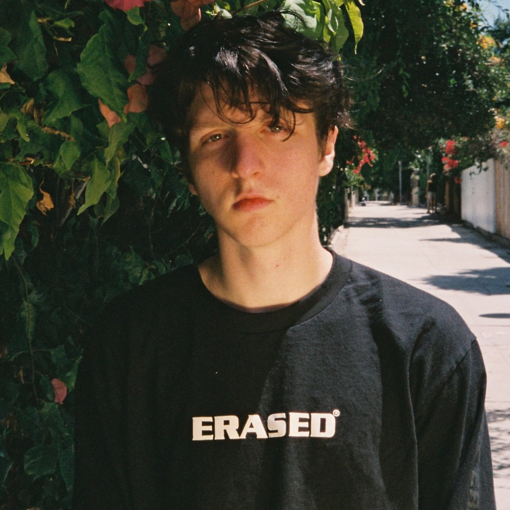

Conheça os melhores artistas
Powfu

O canadense Isaiah Faber, conhecido profissionalmente como
Powfu, ficou conhecido por sua voz ser perfeita para seu
tipo de música, lo-fi hip hop, sendo a maior parte de suas
músicas compostas por letras românticas e, por vezes, melancólicas.
Ghostemane
 Eric Whitney, conhecido pelo seu nome artístico Ghostemane, é
um cantor norte-americano. Ghost ficou conhecido por sua
mistura perfeita entre Trap e Metal, uma mistura inusitada, que
foi possível graças ao talento do cantor.
Eric Whitney, conhecido pelo seu nome artístico Ghostemane, é
um cantor norte-americano. Ghost ficou conhecido por sua
mistura perfeita entre Trap e Metal, uma mistura inusitada, que
foi possível graças ao talento do cantor.
xxxtentacion
 Jahseh Dwayne, mais conhecido pelo seu nome artístico XXXtentacion,
foi um rapper norte-americano. Durante sua vida, o cantor se envolveu
em várias polêmicas, apesar disso, o jovem ganhou popularidade por meio
de suas músicas, que abordavam por vezes, temas controversos. Seu
estilo musical ia do trap emo até o punk rock.
Jahseh Dwayne, mais conhecido pelo seu nome artístico XXXtentacion,
foi um rapper norte-americano. Durante sua vida, o cantor se envolveu
em várias polêmicas, apesar disso, o jovem ganhou popularidade por meio
de suas músicas, que abordavam por vezes, temas controversos. Seu
estilo musical ia do trap emo até o punk rock.
Scarlxrd
 Marius Lucas, conhecido pelo seu nome artístico Scarlxrd (Scarlord),
é um rapper britânico, conhecido pelo seu estilo de música agressivo,
juntando o trap com heavy metal. Junto ao Ghostemane, é um dos pioneiros
do estilo trap metal.
Marius Lucas, conhecido pelo seu nome artístico Scarlxrd (Scarlord),
é um rapper britânico, conhecido pelo seu estilo de música agressivo,
juntando o trap com heavy metal. Junto ao Ghostemane, é um dos pioneiros
do estilo trap metal.